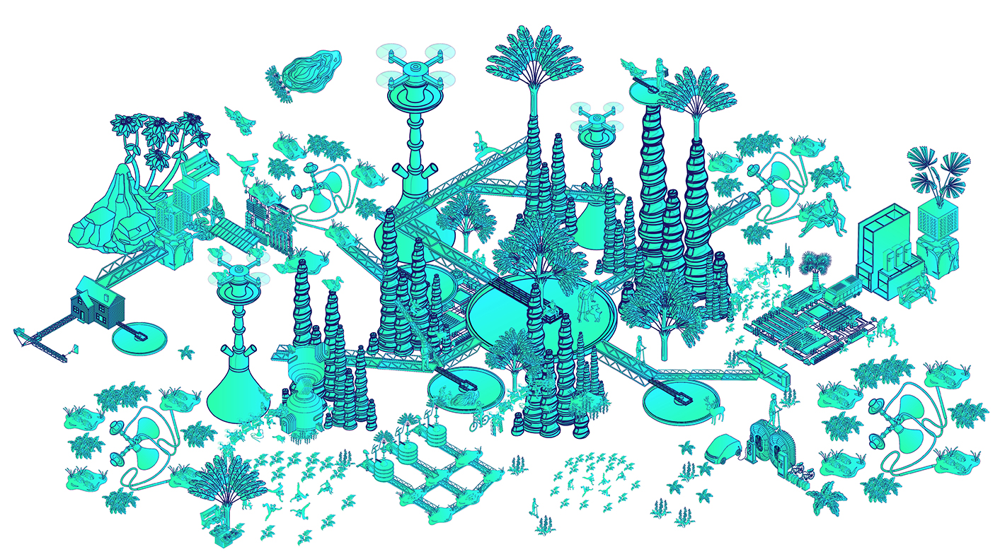

Et si, dans la Bio Banlieue du turfu
Irma, éleveuse de micro-baleines
perdait une de ses baleines dans une rue sombre
d'une soirée habituelle à faire paître son élevage
...
Une autre !
Créé par
Hugo Pilate
, pour une collaboration entre le projet de
La Banlieue du turfu
et
Futurs Proches
, rendu web-friendly par
Salil Parekh
!